Heap Management
Implementing a heap using a linked list
struct block_info
{
int allocated;
char *address;
int size;
struct block_info *next;
};
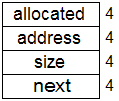
#define HEAP_SIZE 2000 struct block_info *Heap_blocks; Heap_blocks = malloc(sizeof(block_info)); Heap_blocks->allocated = 0; Heap_blocks->address = malloc(HEAP_SIZE); Heap_blocks->size = HEAP_SIZE; Heap_blocks->next = NULL;
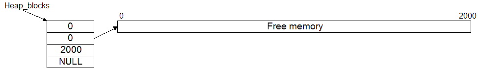
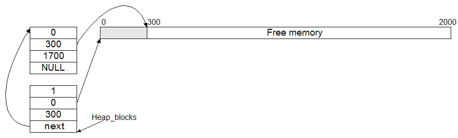
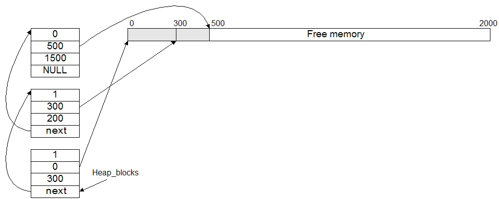
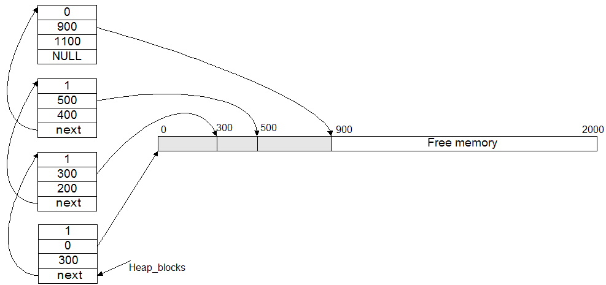
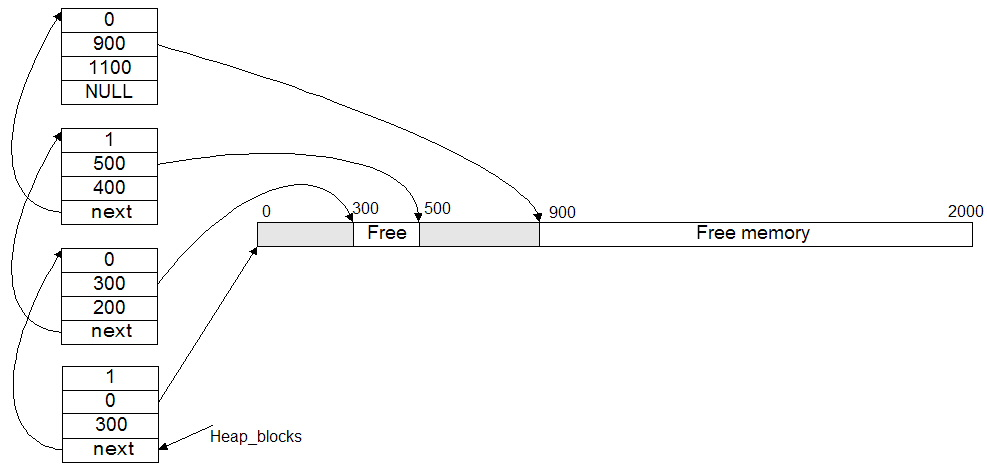
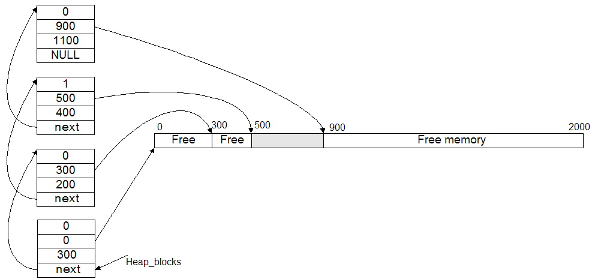
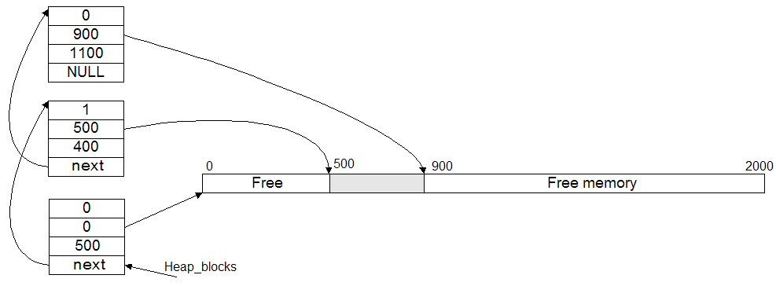
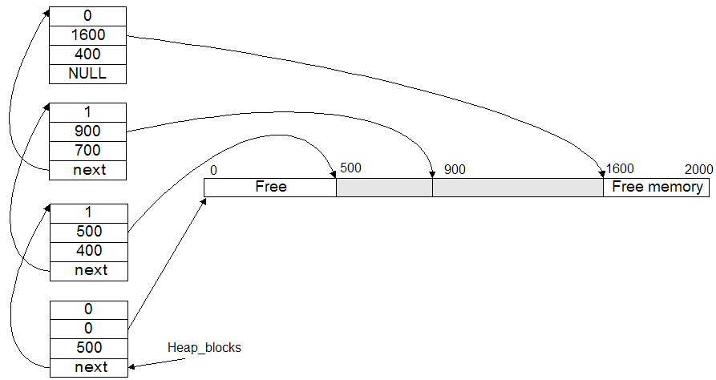
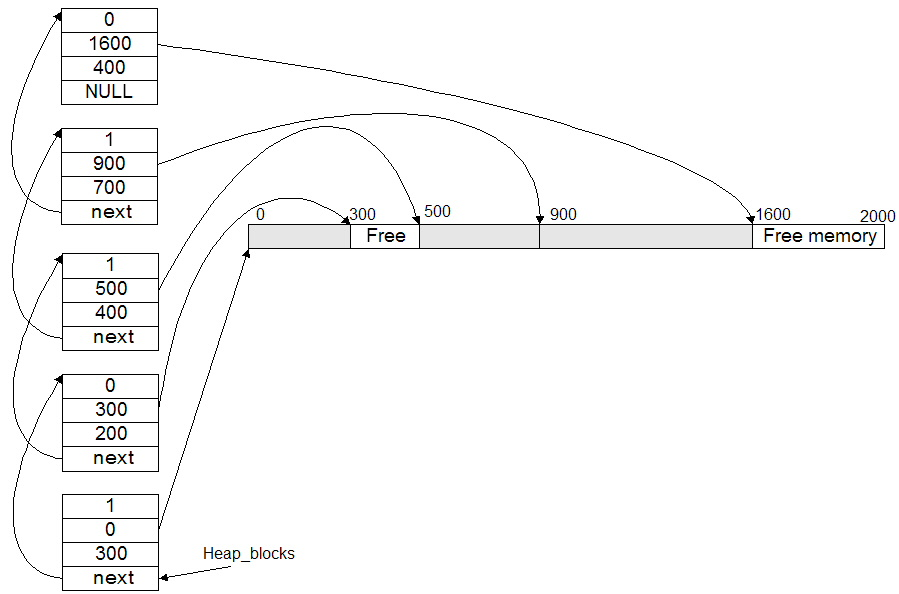
Given this information, a more efficient way to layout the structure is like this:
32-bit system
(logical view)32-bit system
(physical view)
16 bytes64-bit system
(logical view)64-bit system
(physical view)
32 bytes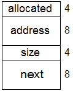 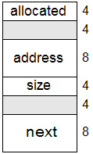
struct block_info
{
int allocated;
int size;
char *address;
struct block_info *next;
};
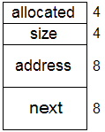
You can have gcc alert (warn) you when the compiler is adding padding between the fields of a struct. Just use the -Wpadded option when compiling the code. The message from gcc when compiling the original struct above looks like this:
struct.c:4:9: warning: padding struct to align 'address' [-Wpadded]
char *address;
^~~~~~~
struct.c:6:22: warning: padding struct to align 'next' [-Wpadded]
struct block_info *next;
^~~~